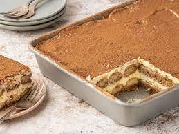

Tiramisu

Description
this recipe will make amazing Tiramisu, perfect for holidays, family gatherings and more!
We wil be using Milano cookies instead of lady fingers for this quick and easy mouth-watring Italian dessert
Ingredients
- Milano cookies - 2 packs
- Butter - 2 sticks
- Mascarpone Cheese - 1 lb.
- Heavy Cream - 1 cup
- Coffee - 1 cup
- Spiced Rum - 1 Tablespoon
- Chocolate chips - as many as you'd like
Steps
- Beat Mascarpone with Heavy Cream, Rum, half of coffee, and Butter until soft peaks
- spread 1/3 mixture on bottom of pan
- quickly dip milano cookies in coffee (not too long or they will get mushy) and arrange half in a layer atop cheese mixture
- repeat steps 1 and 2
- layer the top with remaining mascarpone mixture
- sprinkle chocolate chips